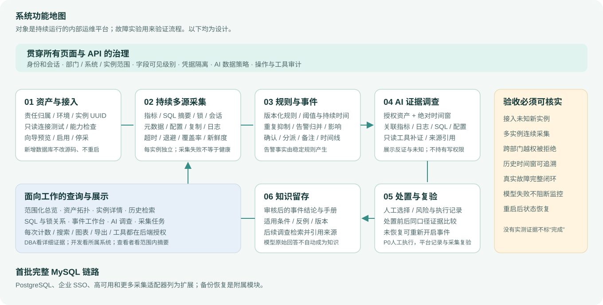
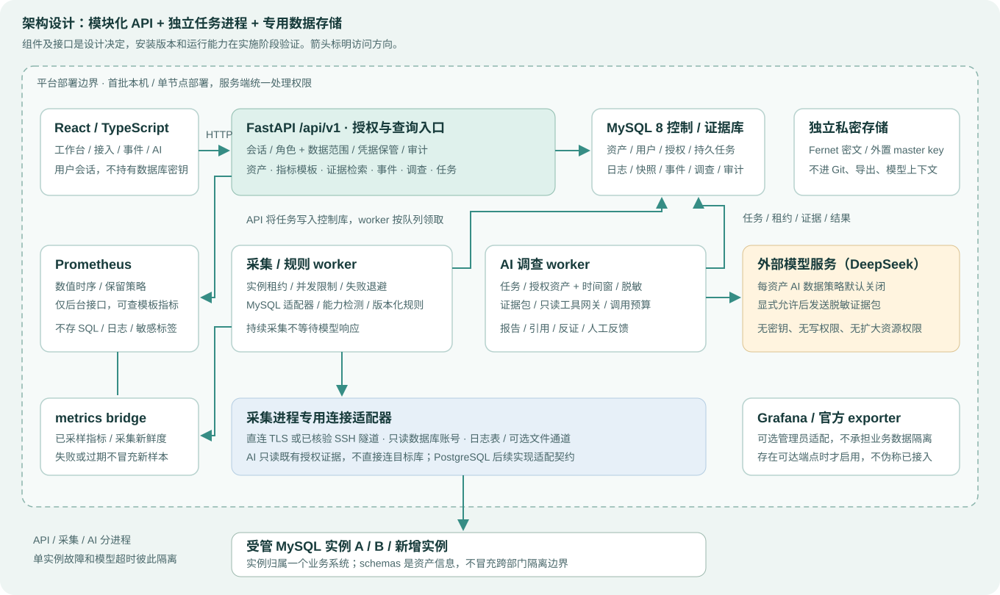

DBA / 运维
发现哪些实例出现问题，追溯指标、SQL、锁和日志，关联业务影响，安排处置并验证恢复。
先做完整 MySQL 平台，再扩展 PostgreSQL。接入、采集、告警、分析和复验使用同一套资产与证据。

发现哪些实例出现问题，追溯指标、SQL、锁和日志，关联业务影响，安排处置并验证恢复。
查看所属系统的数据库状态、规范化 SQL 和相关事件，获取具有证据来源的协作建议。
管理员管理接入、用户和采集策略；查看者在授权范围内了解态势、容量与事件摘要。
API、持续采集和 AI 调查分进程运行；数值时序与结构化证据分开存储。

MySQL 保存组织、资产、凭据引用、任务、结构化快照、日志、事件、调查与审计，采用迁移维护结构。
Prometheus 位于后台。页面通过 API 指标模板访问授权实例；采样时间、缺口、重启和新鲜度必须保留。
模型继承发起人的资源和字段权限。每次工具调用再次鉴权；无法扩大实例范围，也不持有写权限。
切换角色、实例状态和接入异常，演练处置、复验与知识归档。全部为离线静态设计，不执行认证、采集、模型调用或数据库操作。
每项能力都需要代码、真实数据和异常路径证据，不能凭页面存在就算完成。
需求编号 → 页面/数据/API → 工程任务 → 验收。先核实数据库日志能力、时序链路、授权和任务恢复接口。
用户登录与后端范围授权；从向导新增一台未预置 MySQL；计数、能力检测、持续采集和历史随之更新。
真实锁等待或性能异常 → 规则事件 → AI关联证据 → 人工处置记录 → 前后复验 → 审核沉淀知识。
一个实例离线时其他实例继续采集；模型失败不阻塞监控；直接 HTTP 越权被拒绝；API和worker重启恢复任务与历史。
技能用于补足工作方法，不能替代需求、组件判断和真实验证。
Superpowers brainstorming：查原始资料、明确目标、比较方案、把关键决定写成可检查设计，安排独立评审。
writing-plans：给出精确接口、文件职责、依赖和验收；每个任务产生可验证能力。
subagent-driven-development、systematic-debugging、requesting-code-review 与 verification-before-completion。
Superpowers 原项目 ↗GitHub Spec Kit ↗OpenAI Skills ↗